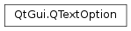

QTextOption¶
Synopsis¶
Functions¶
- def
alignment() - def
flags() - def
setAlignment(alignment) - def
setFlags(flags) - def
setTabArray(tabStops) - def
setTabStop(tabStop) - def
setTabStopDistance(tabStopDistance) - def
setTabs(tabStops) - def
setTextDirection(aDirection) - def
setUseDesignMetrics(b) - def
setWrapMode(wrap) - def
tabArray() - def
tabStop() - def
tabStopDistance() - def
tabs() - def
textDirection() - def
useDesignMetrics() - def
wrapMode()
Detailed Description¶
The
PySide2.QtGui.QTextOptionclass provides a description of general rich text properties.
PySide2.QtGui.QTextOptionis used to encapsulate common rich text properties in a single object. It contains information about text alignment, layout direction, word wrapping, and other standard properties associated with text rendering and layout.
-
class
PySide2.QtGui.QTextOption¶ -
class
PySide2.QtGui.QTextOption(alignment) -
class
PySide2.QtGui.QTextOption(o) Parameters: - o –
PySide2.QtGui.QTextOption - alignment –
PySide2.QtCore.Qt.Alignment
Constructs a text option with default properties for text. The text alignment property is set to
Qt.AlignLeft. The word wrap property is set toQTextOption.WordWrap. The using of design metrics flag is set to false.Constructs a text option with the given
alignmentfor text. The word wrap property is set toQTextOption.WordWrap. The using of design metrics flag is set to false.Construct a copy of the
othertext option.- o –
-
PySide2.QtGui.QTextOption.TabType¶ This enum holds the different types of tabulator
Constant Description QTextOption.LeftTab A left-tab QTextOption.RightTab A right-tab QTextOption.CenterTab A centered-tab QTextOption.DelimiterTab A tab stopping at a certain delimiter-character
-
PySide2.QtGui.QTextOption.WrapMode¶ This enum describes how text is wrapped in a document.
Constant Description QTextOption.NoWrap Text is not wrapped at all. QTextOption.WordWrap Text is wrapped at word boundaries. QTextOption.ManualWrap Same as QTextOption.WrapAnywhere Text can be wrapped at any point on a line, even if it occurs in the middle of a word. QTextOption.WrapAtWordBoundaryOrAnywhere If possible, wrapping occurs at a word boundary; otherwise it will occur at the appropriate point on the line, even in the middle of a word.
-
PySide2.QtGui.QTextOption.Flag¶ Constant Description QTextOption.IncludeTrailingSpaces When this option is set, QTextLine.naturalTextWidth()and naturalTextRect() will return a value that includes the width of trailing spaces in the text; otherwise this width is excluded.QTextOption.ShowTabsAndSpaces Visualize spaces with little dots, and tabs with little arrows. QTextOption.ShowLineAndParagraphSeparators Visualize line and paragraph separators with appropriate symbol characters. QTextOption.ShowDocumentTerminator Visualize the end of the document with a section sign. This enum value was added in Qt 5.7. QTextOption.AddSpaceForLineAndParagraphSeparators While determining the line-break positions take into account the space added for drawing a separator character. QTextOption.SuppressColors Suppress all color changes in the character formats (except the main selection).
-
PySide2.QtGui.QTextOption.alignment()¶ Return type: PySide2.QtCore.Qt.AlignmentReturns the text alignment defined by the option.
-
PySide2.QtGui.QTextOption.flags()¶ Return type: PySide2.QtGui.QTextOption.FlagsReturns the flags associated with the option.
See also
-
PySide2.QtGui.QTextOption.setAlignment(alignment)¶ Parameters: alignment – PySide2.QtCore.Qt.AlignmentSets the option’s text alignment to the specified
alignment.
-
PySide2.QtGui.QTextOption.setFlags(flags)¶ Parameters: flags – PySide2.QtGui.QTextOption.FlagsSets the flags associated with the option to the given
flags.See also
-
PySide2.QtGui.QTextOption.setTabArray(tabStops)¶ Parameters: tabStops – Sets the tab positions for the text layout to those specified by
tabStops.
-
PySide2.QtGui.QTextOption.setTabStop(tabStop)¶ Parameters: tabStop – PySide2.QtCore.qrealSets the default distance in device units between tab stops to the value specified by
tabStop.
-
PySide2.QtGui.QTextOption.setTabStopDistance(tabStopDistance)¶ Parameters: tabStopDistance – PySide2.QtCore.qrealSets the default distance in device units between tab stops to the value specified by
tabStopDistance.
-
PySide2.QtGui.QTextOption.setTabs(tabStops)¶ Parameters: tabStops – Sets the tab positions for the text layout to those specified by
tabStops.
-
PySide2.QtGui.QTextOption.setTextDirection(aDirection)¶ Parameters: aDirection – PySide2.QtCore.Qt.LayoutDirectionSets the direction of the text layout defined by the option to the given
direction.
-
PySide2.QtGui.QTextOption.setUseDesignMetrics(b)¶ Parameters: b – PySide2.QtCore.boolIf
enableis true then the layout will use design metrics; otherwise it will use the metrics of the paint device (which is the default behavior).
-
PySide2.QtGui.QTextOption.setWrapMode(wrap)¶ Parameters: wrap – PySide2.QtGui.QTextOption.WrapModeSets the option’s text wrap mode to the given
mode.See also
-
PySide2.QtGui.QTextOption.tabArray()¶ Return type: Returns a list of tab positions defined for the text layout.
-
PySide2.QtGui.QTextOption.tabStop()¶ Return type: PySide2.QtCore.qrealReturns the distance in device units between tab stops. Convenient function for the above method
-
PySide2.QtGui.QTextOption.tabStopDistance()¶ Return type: PySide2.QtCore.qrealReturns the distance in device units between tab stops.
-
PySide2.QtGui.QTextOption.tabs()¶ Return type: Returns a list of tab positions defined for the text layout.
-
PySide2.QtGui.QTextOption.textDirection()¶ Return type: PySide2.QtCore.Qt.LayoutDirectionReturns the direction of the text layout defined by the option.
-
PySide2.QtGui.QTextOption.useDesignMetrics()¶ Return type: PySide2.QtCore.boolReturns
trueif the layout uses design rather than device metrics; otherwise returnsfalse.
-
PySide2.QtGui.QTextOption.wrapMode()¶ Return type: PySide2.QtGui.QTextOption.WrapModeReturns the text wrap mode defined by the option.
© 2018 The Qt Company Ltd. Documentation contributions included herein are the copyrights of their respective owners. The documentation provided herein is licensed under the terms of the GNU Free Documentation License version 1.3 as published by the Free Software Foundation. Qt and respective logos are trademarks of The Qt Company Ltd. in Finland and/or other countries worldwide. All other trademarks are property of their respective owners.